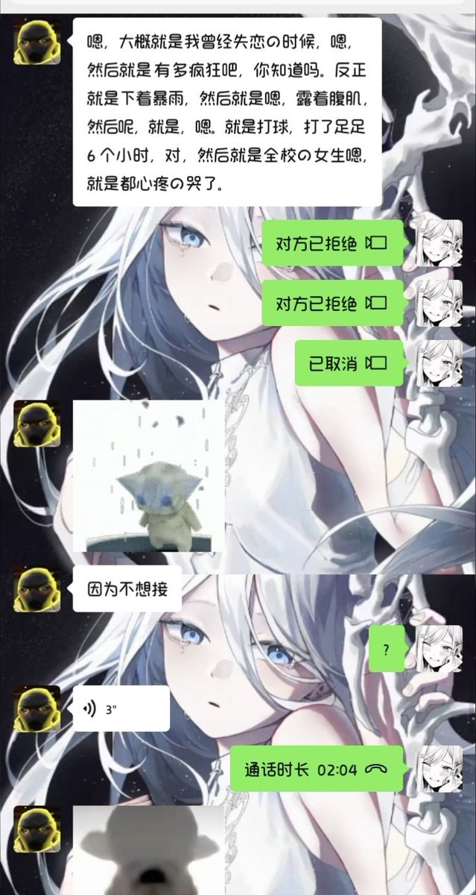
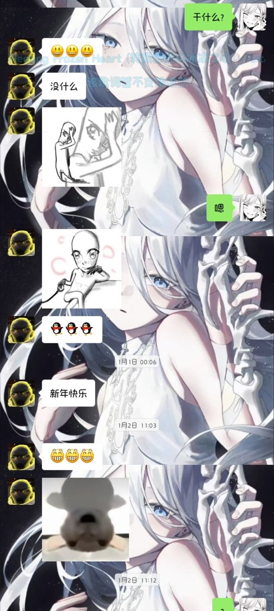
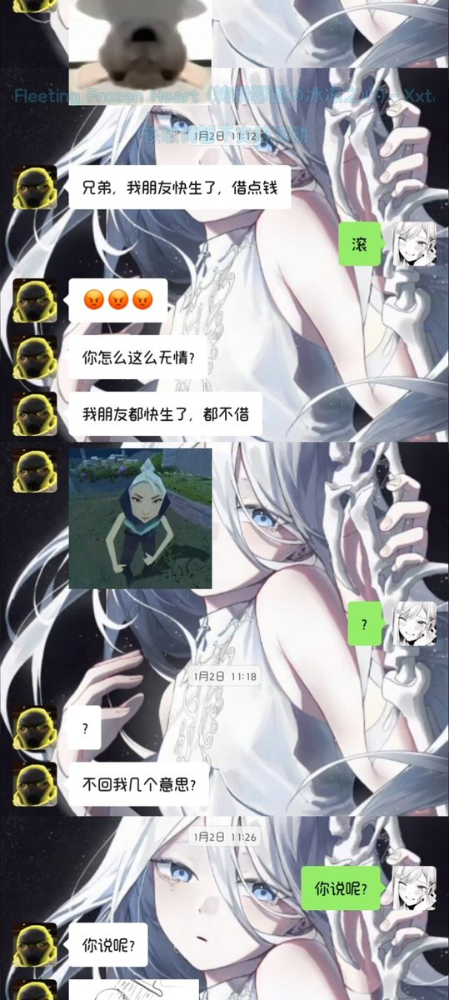
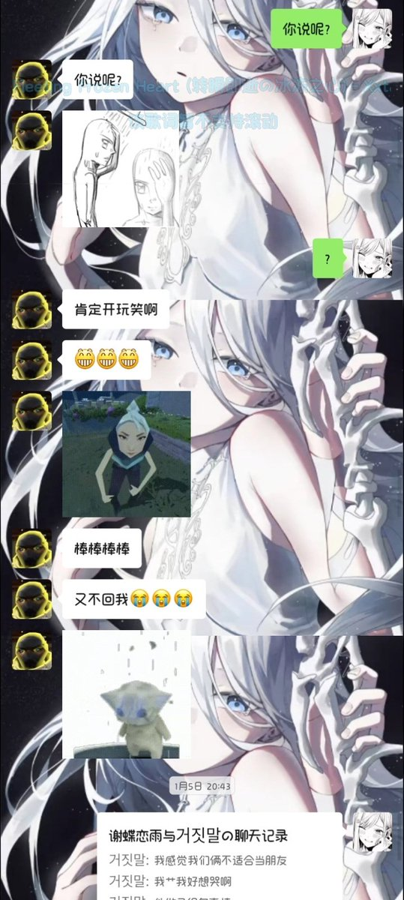

谢蝶恋雨
@xiedielianyu
这个时候他已经知道我在生气了，但是还是拉不下脸来道歉，她说他的朋友只有不到五个为什么还要这么对我。。。




谢蝶恋雨
@xiedielianyu
之前很要好的朋友，可惜初二开始天天带手机去学校，朋友看都不看一眼了，真的是玩手机玩傻了，我不太明白为什么能玩那个死人货币战争所以看到我的消息半个小时不理我（还是明知道我生气的情况下） https://t.co/3b1GA5GXbS